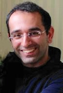

AISTATS*2012 / MLSS Joint Tutorials
09:00 - 11:00, April 20, 2012
Zoubin Ghahramani
Department of Engineering, University of Cambridge
Nonparametric Bayesian ModellingBayesian nonparametrics provides an elegant framework for developing flexible models for machine learning and statistics. Much work has been done on nonparametric models of distributions (e.g. via Dirichlet processes) and functions (e.g. via Gaussian processes). However, many modelling tasks require latent variables with richer structures. I will describe recent work on developing Bayesian nonparametric models for sparse matrices, time series, deep networks, covariance matrices, and social networks.
Bio: Zoubin Ghahramani is Professor of Information Engineering at the University of Cambridge, UK. His current research focus is on nonparametric Bayesian modelling and statistical machine learning. He has also worked on applications to bioinformatics, econometrics, and a variety of large-scale data modelling problems. He has over 200 publications in fields such as computer science, statistics, engineering, and neuroscience. He has served on the editorial boards of several leading journals in the field, including JMLR, JAIR, Annals of Statistics, Machine Learning, Bayesian Analysis, and was Associate Editor in Chief of IEEE Transactions on Pattern Analysis and Machine Intelligence, the IEEE's highest impact journal. He also served on the Board of the International Machine Learning Society, and as Program Chair (2007) and General Chair (2011) of the International Conference on Machine Learning. More information can be found at http://learning.eng.cam.ac.uk/zoubin/.
11:30 - 13:30, April 20, 2012

David W. Hogg
Department of Physics, New York University
Probabilistic decision-making, data analysis, and discovery in astronomyAstronomy is a prime user community for machine learning and probabilistic modeling. There are very large, public data sets (mostly but not entirely digital imaging), there are simple but effective models of many of the most important phenomena (stars, quasars, and galaxies), and there are very good models of telescopes, cameras, and detectors. I will show in detail some examples of problems we were able to solve in astrophysics by bringing probabilistic inference and decision theory to astronomy. I will discuss why many "supervised" methods are not nearly as useful in astronomy as those that involve generative modeling. I hope to leave the audience with real research problems, the solutions to which would be (a) achievable with contemporary machine-learning methods, and at the same time (b) very exciting within the astrophysics community.
Bio: David W. Hogg went to high school in Toronto, Canada, and university at the Massachusetts Institute of Technology in Cambridge, Massachusetts, graduating in 1992. While pursuing his undergraduate degree, he did some research in education and robotics at the MIT Media Laboratory and in Solar System astrophysics at the Canadian Institute for Theoretical Astrophysics.
Hogg's PhD research—on gravitational lensing and galaxy evolution—was performed at the California Institute of Technology under the supervision of Roger Blandford, working closely also with Judith Cohen and Gerry Neugebauer. His graduate research made heavy use of the then-new ten-meter W. M. Keck Telescopes. In 1997, Hogg began a long-term membership (postdoc) at the Institute for Advanced Study where, among other things, he became involved in the Sloan Digital Sky Survey.
Hogg came to New York University in 2001, and was granted tenure there in 2007. His work at NYU has included fundamental cosmological measurements, galaxy demographics, and stellar dynamics, with a significant engineering component, in areas of instrument calibration, automated data analysis, and statistical inference. He spends a part of each year at the Max Planck Institute for Astronomy in Heidelberg, Germany.